Adventure Medical Kits Pocket Medic Kit 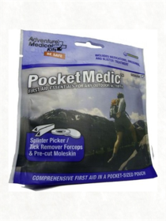 The Pocket Medic proves that a comprehensive first aid kit can still fit in your pocket! This kit features medications for pain and allergy, After Bite insect bite and sting relief wipes, dressings for cuts and scrapes, and a splinter picker/tick remover with precision-ground tips. All contents are housed in a durable waterproof pouch that will withstand years of use.AmazonBasics High-Speed HDMI Cable (3 Feet/0.9 Meter) - Supports Ethernet, 3D, and Audio Return [Newest Standard] 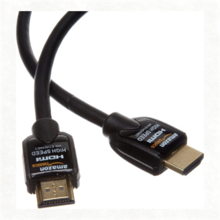 AmazonBasics High-Speed HDMI Cable (3 Feet/0.9 Meter) - Supports Ethernet, 3D, and Audio Return [Newest Standard]APC SMC1500 Smart-UPS 900 Watts/1500 VA Input 120V/Output 120-Volt Interface Port USB with Uninterrupted Power Supply  BOLT Portable Battery Backup and Wall Charger Combined - Retail Packaging - Argon 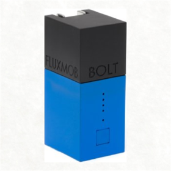 BOLT is the world's smallest portable battery backup and wall charger combined. BOLT is designed to replace your standard wall charger and will automatically charge with your phone and be ready to go when you are. This makes BOLT a true grab and go solution. Existing portable batteries on the market are typically geared for emergency charging. This means that they are either too big to be practical or they don't hold enough charge to be useful everyday. Another issue we've found is that virtually every other battery backup on the market can ONLY be charged via USB and that can be a hassle. You'll need to bring around a USB wall adapter or hunt down a USB port. This inconvenient method of keeping smart phones and other devices charged inspired the creation of BOLT. Our passion for simplicity pushed us to make BOLT the world's smallest battery backup and wall charger combined. BOLT's compact size and 3000mAh battery make it the perfect balance of portability and capacity that will charge your mobile devices ANYWHERE. Dimensions: 70mm x 34mm x 28mm (2.75" x 1.33" x 1.10"). 3000mAh Samsung Li-Ion Battery. Certifications: CE, RoHS, FCC, WEEE. Charge Input: 90-240v A/C (Globally Supported). Charge Output: 5V / 1A. Smooth Rubberized Finish. Status Indicator LEDs. Smart Charge Technology: Automatically Bypasses the Battery when Fully Charged.Brother P-Touch M Series Tape Cartridge for P-Touch Labelers, 1/2w, Black on White 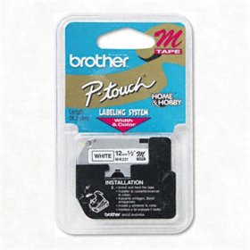 M series non-laminated tape for P-Touch@ label makers.Comply Tsx-400 Comfort PLUS Earphone Tips 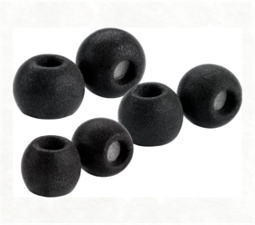 Delivering amazing comfort through a spherical shape, Comfort Plus Tsx-400 tips have integrated Wax-Guard, preventing wax from entering the sound port, which will diminish sound quality. They also provide a superior audio experience and stay-in-ear fit — so you hear music the way it was meant to be heard.Cosmonaut: Wide-Grip Stylus for Capacitive Touch Screens 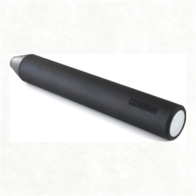 The Cosmonaut is a minimal and elegant stylus for touch screen devices, like the iPad. Unlike most styli, which are designed to look and feel like a pen, the Cosmonaut was designed to feel like a dry erase marker, because the experience of drawing on an tablet most closely mirrors the experience of drawing on a whiteboard. The Cosmonaut is great for doodling, sketching, and writing on any touch screen device. The shaft has a comfortable rubber grip that feels great to hold for people of all ages, including children and the elderly. The tip is responsive and glides effortlessly over the glass screen. The Cosmonaut will work on nearly any capacitive touch screen device, including the iPad and Kindle Fire. It does not require special software; it will work wherever your finger works. Designed and manufactured in America.DiskStation DS1813+ NAS DiskStation DS1813+ NASDUALplate for Capture Camera Clip 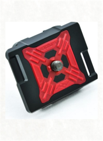 The Peak Design MICROplate is specifically designed for any photographer wanting to use Capture with a Micro 4/3s or point-and-shoot camera. MICROplate has a smaller base that fits better on slimmer camera bodies, giving you a more comfortable and less buEverDock Duo  EverDock Duo 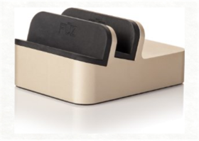 Machined from a solid block of aluminum, the EverDock is designed to support virtually all smartphones and tablets. Accommodating lightning, 30-pin, and micro-USB connectors, the EverDock works with smartphones and tablets from Apple, Samsung, HTC, Motorola, Nokia, LG, BlackBerry and others.EverDock Duo 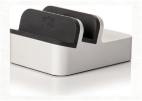 Machined from a solid block of aluminum, the EverDock is designed to support virtually all smartphones and tablets. Accommodating lightning, 30-pin, and micro-USB connectors, the EverDock works with smartphones and tablets from Apple, Samsung, HTC, Motorola, Nokia, LG, BlackBerry and others.ExpoImaging ROGUEGELS-G Rogue Photographic Design Rogue Gels - Lighting Filter Kit for Rogue Grid 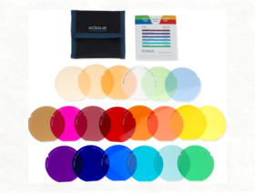 Rogue Grid Gels are custom cut to fit the Rogue Grid. Rogue Grid Gels come in a kit that includes 20 different colors (1 of each color), and a durable padded storage pouch with quick reference dividers to help you keep your gels safe and organized. Each kit includes 14 color effects gels for dramatic color, 5 color correction gels to balance your flash to ambient light, and 1 diffusion gel. Rogue Gels are made from the world's highest quality materials from LEE Filters UK, the world's leading manufacturer of lighting filter products.ExpoImaging ROGUEGELS-U Rogue Photographic Design Rogue Gels Universal Lighting Filter Kit 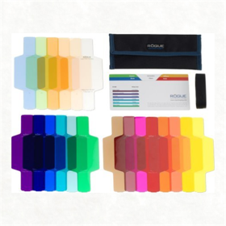 Rogue Universal Gels come in a kit that includes the Rogue Gel-Band, 20 different colors (1 of each color), and a durable padded storage pouch with quick reference dividers to help you keep your gels safe and organized. Each kit includes 14 color effects gels for dramatic color, 5 color correction gels to balance your flash to ambient light, and 1 diffusion gel. Rogue Gels are made from the world's highest quality materials from LEE Filters UK, the world's leading manufacturer of lighting filter products.Glif Plus: A deluxe Glif package, iPhone 5 Tripod Mount & Stand 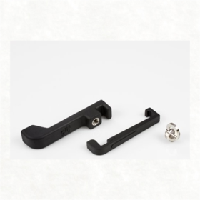  The Glif+ comes with 3 pieces: the Glif, the Serif, and the Ligature. The Glif is an iPhone 5 accessory with two primary functions: mounting your iPhone onto a tripod and propping up your iPhone at various angles. Our goal was to create something small, simple, and elegant. But out of this simple design emerges countless uses. Mount your iPhone to a tripod for taking great pictures or making movies. Prop your iPhone up for hands-free FaceTiming or to watch videos. All of that and more in a compact design that is manufactured in America. The Glif is made from recyclable rubberized plastic that feels great and plays nice with your phone, and is small enough to fit snugly in your pocket, purse, or backpack. It has a 1/4"-20 thread that fits any standard tripod or camera mount. The Glif is designed to work with a "naked" (caseless) iPhone and is compatible with the iPhone 5. The Serif is designed to keep your iPhone incredibly secure on the tripod. While the Glif is great for normal use, the Serif will keep your phone safe in more extreme situations. And, when you are not using the Serif, it fits snuggly inside the Glif, making it very compact. Additionally, the Glif+ comes with the Ligature, a simple keyring loop that attaches to the tripod thread on the Glif. Now, you'll have a way to always keep your Glif handy, by attaching it to your keychain, backpack, purse, or anything, really. The Glif+ comes with 3 pieces: the Glif, the Serif, and the Ligature. The Glif is an iPhone 5 accessory with two primary functions: mounting your iPhone onto a tripod and propping up your iPhone at various angles. Our goal was to create something small, simple, and elegant. But out of this simple design emerges countless uses. Mount your iPhone to a tripod for taking great pictures or making movies. Prop your iPhone up for hands-free FaceTiming or to watch videos. All of that and more in a compact design that is manufactured in America. The Glif is made from recyclable rubberized plastic that feels great and plays nice with your phone, and is small enough to fit snugly in your pocket, purse, or backpack. It has a 1/4"-20 thread that fits any standard tripod or camera mount. The Glif is designed to work with a "naked" (caseless) iPhone and is compatible with the iPhone 5. The Serif is designed to keep your iPhone incredibly secure on the tripod. While the Glif is great for normal use, the Serif will keep your phone safe in more extreme situations. And, when you are not using the Serif, it fits snuggly inside the Glif, making it very compact. Additionally, the Glif+ comes with the Ligature, a simple keyring loop that attaches to the tripod thread on the Glif. Now, you'll have a way to always keep your Glif handy, by attaching it to your keychain, backpack, purse, or anything, really.Hoodman H-EYEC22 HoodEYE Eyecup for Canon 22mm Cameras  Joby GorillaPod Hybrid Red 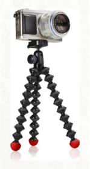 The perfect companion for your Hybrid or Compact System Camera - such as the SONY NEX series, the Panasonic LUMIX series, or the Olympus PEN series - the GorillaPod Hybrid is the most versatile, portable camera tripod for the demanding, active photographer. Its rock-solid stabilization and precise ball head-enabled positioning allow you to capture professional-quality images without the size and weight of a traditional full-size camera tripod system. Whether you're staging a last-second street portrait, shooting time-lapse photos with the need for precise composition control, or recording stable, shake-free video, GorillaPod Hybrid lets you unleash the power of your hybrid compact system camera.Keyprop: Keychain Stand That Fits All Iphones and Most Smartphones 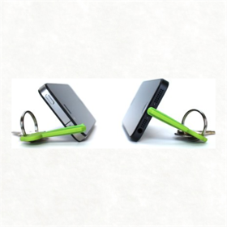 Keyprop fits virtually all phones and is always with you. Fit Keyprop in your Lightning dock or in the headphone jack to prop up your phone. Get KeyCam, our FREE self timer app on iTunes for great photos.Krusell 95550 Hector Premium Leather Case with Beltloops for iPhone 5/5S/5C - Black 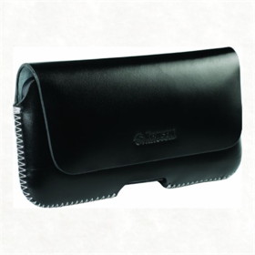 Krusell Hector is a slim designed mobile case made of high quality smooth leather. The stitching gives the case extra durability and interior suede lining protects your device from scratches. It keeps your device safe and secure inside due to the hidden magnetic closing on the front. Belt loops on the back side allow you to safely carry your phone on your belt or purse strap. Please note: clip is not available for this version.LaCie Rugged USB 3.0 Thunderbolt Series 1TB External Hard Drive 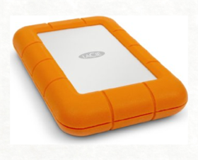 With both USB 3.0 and Thunderbolt interfaces, the LaCie Rugged is a perfect match for your Mac and PC. And because USB 3.0 is backwards compatible, you can connect it to any standard computer on the planet. The LaCie Rugged is also fully bus-powered through the included USB 3.0 and Thunderbolt cables. Its portability and interfaces make it the must-have sidekick to a new Mac or Ultrabook.Lightning Digital AV Adapter 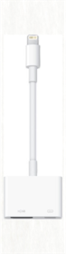 Put your slides, movies, photos, and everything else on your iPad with Retina display, iPad mini, iPhone 5, or iPod touch (5th generation) screen on an even bigger screen: your HDTV.Matias Slim One Keyboard for iPhone and Mac 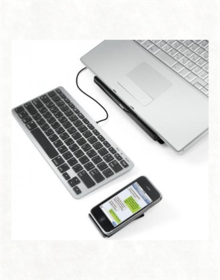 Type on your iPhone: turbo charge your texting, with the speed and comfort of a real keyboard. When you're at your desk, there's no faster way to type on your iPhone (or iPod touch, iPad, Android 3.0 phone, or tablet). The function keys control your iPhone's screen brightness, navigation, audio, and more. Type on your Computer: with one click, you can instantly switch back and forth between typing on your iPhone and your PC or Mac. It's like having two keyboards in one. Built for style. Stylish and ultra-thin, the Slim One Keyboard looks gorgeous on your desk. It's also perfect in tight spaces, where you may not have enough room for a big keyboard. MiniRizer stand included: the MiniRizer lifts and tilts your iPhone for easier viewing and tapping. You have 3 angles to choose from: 15 Degrees, 25 Degrees, or 50 Degrees. Non‑slip rubber feet keep it from sliding around on your desk. Lefty friendly: if you're left-handed, you can move the stand to the left side of the keyboard. If you're used to controlling your iPhone with your left hand, this feels much more natural. Mac version too: for Mac users, and other hard to find symbols are printed right on the keys. Simply hold down Option for the bottom-right characters, or Shift-Option for top-right characters - they even work on the iPhone. The function keys provide all the standard Mac media controls, including volume, screen brightness, iTunes track selection, and more. Also connects to other devices: we designed the keyboard to connect wirelessly to your iPhone, but it's actually a standard Bluetooth connection, so it'll work with any device that supports Bluetooth keyboards. That includes the iPod touch, iPad, Macs and PCs, Android 3.0+ smartphones and tablets, Samsung Galaxy Tab, BlackBerry PlayBook, and many more. No batteries required: the keyboard cable to your computer also powers the wireless connection to your iPhone, so you’ll never have to worry about batteries.The Nest Earbud Case / Earphone Protector & Winder Blue 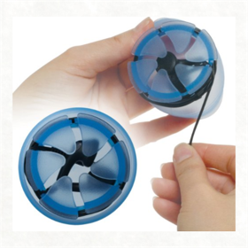 Now, you'll never have to worry about messy, tangled cords again with The Nest Earbud Case/Earphone Holder and Winder. It seconds, you can store you earbuds and earphones safely and securely,with the earpieces, mic and cords fully protected. When you're ready to use them, a single pull will release the earbuds while still keeping them fully tangle-free. The case is made form a single piece of silicone and it's compact, soft, and flexible making it perfect for tossing is pockets, bags, purses, and more. Use it with most earbuds with cords up to 48" in length, including apple iPod earbuds.Olloclip 4-in-1 Lens Solution for iPhone 5/5s - RED/Black 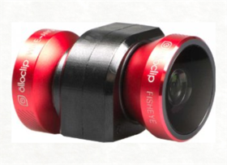 The 4-in-1 Lens System for iPhone 5/5S from olloclip features a RED lens and BLACK clip. This lens system is designed for an iPhone 5/5S and includes a fisheye, wide angle and two different macro lenses to allow you to capture enhanced images and video. It connects to your iPhone 5/5S in just a few seconds, and you can switch lenses simply by flipping it over. The first macro lens applies about 10 times magnification and lets you focus the phone within about 18mm of your subject, while the second macro lens applies about 15 times magnification and lets you focus within about 12mm of your subject. To access either macro lens, simply unscrew and remove the wide-angle or fisheye lens. Meanwhile, by using the fisheye lens you can capture approximately a 180-degree field of view. The wide angle lens provides approximately double that of the iPhone's standard field of view. This lens system is also built to stand up to long-term use. The olloclip uses precision ground glass multi-element optics for the lenses. The barrels are made from aircraft-grade aluminum using a CNC machine and then anodized. The iPhone 5/5S attachment is made from a soft plastic material that ensures a secure fit every time to your phone. And you can use the lenses in combination with any apps that utilize the rear-facing camera. Additionally, the olloclip is small enough to fit into a pocket when you're not using it.Orbis ENLORB1A Ring Flash Kit 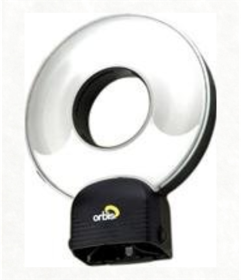 The Orbis Ring Flash uses your existing flash/strobe to create the same beautiful, characteristic ring flash look that has previously only been possible with expensive studio systems. A patent-pending 'one-size-fits-most' dock means that the Orbis works with a huge range of flash/strobes with no need for add-ons. Conceived by a full-time professional photographer and developed by top optical designers, the Orbis Ring Flash is made from durable ABS plastics, weighs around 17.5oz and is totally portable. The patent-pending ‘light-tunnel’ redirects the light from your flash/strobe transforming it into an incredibly effective ring flash. A patent-pending 'one-size-fits-most' dock means that the orbis works with a huge range of flash/strobes with no need for add-ons. The Orbis enables you to take photographs with shadowless quality ring flash light without the high costs associated with buying or renting a bulky studio ring flash. All you need is a standard flash/strobe unit and an off-camera cord (or other remote triggering method). The Orbis is handheld or bracket mountable (bracket sold seperately) so neither impedes your camera system's functionality nor relies on the fragile hotshoe connection. The Orbis was designed to give passionate photographers an edge; by enabling you to quickly and easily take beautifully lit photographs, and to get the most out of your equipment.Peak Design Capture Camera Clip PEAKCAMCLIP 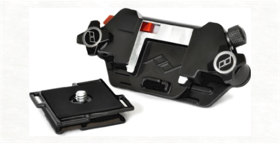 The Capture Camera Clip System is a new way for active photographers to carry their camera - by rigidly clipping it to any strap or belt on your existing gear. The product consists of a compact, ultralight aluminum "chassis" that securely clamps down onto your belt, backpack strap, messenger bag strap, climbing harness, life vest, or other garments you already own. A small aluminum "camera connection plate" screws into the tripod mount on your camera. The plate allows your camera to slide and lock into the chassis, letting you securely carry your bulky SLR camera with ease. Furthermore, Capture keeps your camera readily accessible with it's "quick release lock." With the press of a button, you can slide your camera out of the chassis, snap a photo, and click it back into place. Whether you're hiking, biking, skiing, climbing mountains, or just snapping pictures at a family gathering, the versatility of Capture will revolutionize the way you transport and handle your camera.Peak Design MICROplate 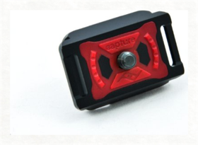 The Peak Design DUALplate allows you to take your camera out of Capture and put it directly into your Manfrotto RC2 or ARCA-type tripod head - no disassembly necessary. Now you can keep your camera secure and accessible and take it from your hip to the trRode Smartlav Lavalier Microphone for iPhone and Smartphones 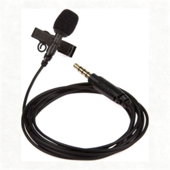 The smartLav is a professional-grade wearable microphone designed for use in a wide range of film, television and broadcast scenarios, or wherever professional quality audio is required in a discreet, portable format without the complication and expense of additional wireless equipment. With the smartLav the user simply mounts the microphone on the talent, connects it to a smartphone or tablet headset jack and records via the RØDE Rec app for iOS, or any other audio app of their choice. By employing a high quality omni-directional condenser capsule the smartLav picks up sound equally from all around the microphone, allowing for versatility when mounting and ensuring a high degree of user-friendly operation. A foam pop shield is supplied to minimize wind noise and vocal plosives (hard ‘b’, ‘t’ and ‘p’ sounds), as well as a durable mounting clip with in-built cable management. The smartLav is compatible with any audio app that accepts input from the headset connection, however it has been designed to pair perfectly with RØDE’s RØDE Rec app for Apple iOS devices. RØDE Rec turns the user’s iOS device into a fully-featured field recorder, with a wide range of equalization presets to suit various recording situations, in addition to professional editing functions and the ability to publish to Sound Cloud and Drop box direct from the app.Rode VideoMic Pro VMP Shotgun Microphone  Rogue ROGUEGRID 3-In-1 Stacking Honeycomb Grid System with Pouch for all Shoe-Mount Flashes with Flash Units from Canon, Nikon, Sony, Metz, Nissin, Pentax, Olympus and Others 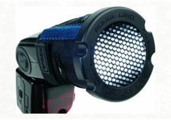 3 Grid Angles in One Compact Package The patent pending Rogue Grid design features stacking honeycomb grids that provide 16 degree, 25 degree, and 45 degree spot lighting control. This means that photographers can choose among three different size grid spots using this small, lightweight system. Measuring 3.6" x 1.2" (92mm x 30mm), and weighing just 3.5oz (100 grams) with the included strap, the Rogue Grid fits easily into any photographer's bag. How does it work? The Rogue Grid's unique design utilizes precision-molded honeycomb grids that can be used independently for the 25˚ or the 45˚ spots, or stacked together to create the 16˚ spot. Because the honeycomb cells align precisely using the integrated alignment features, they can be stacked without creating unwanted shadows and reducing light output. When not being used, the stacked grids store conveniently inside the bezel. What does the light look like from a honeycomb grid? When attached to a light source, a honeycomb grid creates a spot of light with a gradual fall-off useful for adding dimension and depth to an image, or for highlighting important features. The angle of the grid determines the size of the spot projected forward, with smaller degree grids producing smaller spots, and larger angles producing larger spots. How are honeycomb grids typically used? Grids are often used on off-camera flashes as hair lights in portraiture, or for background or accent lights anytime a photographer is interested in highlighting a portion of an image for dramatic effect. When attached to an off-camera flash, grids help draw attention to an object, texture, or color, and can help to create a desired atmosphere or mood in an image. Easy to attach, and Includes a Pouch The Rogue Grid securely attaches to almost all standard shoe mount flashes using the included adjustable Rogue Tension Strap. Also included is a durable nylon storage pouch that accommodates both the Rogue Grid and grid strap.Sena 8268C8 Wallet Book Leather Case for iPhone 5 & 5s - 1 Pack - Retail Packaging - Pebble Red 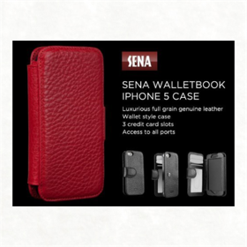 The Wallet Book combines your iPhone 5 with a premium leather designer wallet. This book style case is designed with a side spine, presenting your iPhone 5 on the right side and a wallet on the left. Offered in various solid colors in classic leather and in croco leather, the Wallet Book is perfect for hiding your iPhone 5 inside a designer premium leather wallet. The secure snap closure provides a snug fit to your iPhone 5 while concealing it. Its rigid protective layer reinforces additional backbone support for durability. It is individually handcrafted from the finest Italian Napa leather with Sena's well-known quality and strong attention to detail. The Wallet Book is perfect for placing in a pocket or dropping it into your purse. It can also be held as a small clutch purse with everything you need for the night outSMART-UPS C 1500VA SYSTEM APC Smart-UPS C 1500VA LCD 120VTamrac MX-S536801 Memory & Battery Management Wallet 4 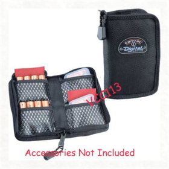 Tamrac's S.A.S. Memory & Battery Management Wallet 4 is essential for any digital photographer. This wallet has four pockets to provide quick access to memory cards and batteries. It uses Tamrac's patented Memory & Battery Management System, which uses red flags to identify available memory cards and batteries from ones that are used up. Quickly attaches to the shoulder straps or backpack harnesses of Tamrac products or to most belts.Twelve South PlugBug - All-in-one 2.1 amp iPhone/iPad charger with MacBook plug attachment 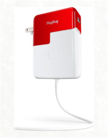 Designed exclusively for MacBook Pro and MacBook Air, PlugBug is the first ever, all-in-one, dual charger that can power up both your MacBook + iPhone or iPad at the same time, using one power outlet. Remarkably simple and elegantly designed, this go anywhere power pack means one less charger to carry and one less outlet to find.Wacom Bamboo Solo Stylus for Apple iPad, iPhone, iPod touch, Android and Other Capacitive Touch Surfaces 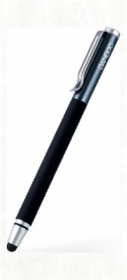 Comes in a variety of vibrant colors.View larger Offers an authentic pen-like experience. View larger From Wacom, leaders in digital pen technology for over 30 years, comes the 2nd generation Bamboo Stylus solo. Get more from your tablet as you write, sketch, or navigate while enjoying a pen-like experience thanks to the stylus's in-hand balance. The slim, responsive rubber nib is easy to replace, and the stylus's polished anodized aluminum cap protects it when not in use. The Bamboo Stylus solo is available in six colors and compatible with all capacitive touchscreen devices, including tablets, smartphones, e-readers, and more. Precise Navigating and Drawing with Thin, High-Quality Stylus Tip The Bamboo Stylus solo has a 5mm tip, smaller than many other styluses on the market, which usually have 8mm tips. A smaller tip means you can better see your writing or drawing as you create. The Bamboo Stylus solo nib is made of a unique mix of materials and crafted with care to glide across your screen without scratching. And when the nib wears off after extensive use, you can easily replace it (replacement nibs are sold separately). Stylus with an Authentic Pen-Like Experience With the 2nd generation Bamboo Stylus solo, you'll experience natural, comfortable doodling, writing, and navigating. This stylus offers an authentic pen-like experience for your touchscreen devices, thanks to its in-hand balance. The stylus is compatible with devices using capacitive touchscreen technology. What's in the Box Stylus, quick-start guide, and Bamboo Paper flyer. At a Glance Comfortable, natural way to write and navigateAuthentic pen-like experience with exceptional in-hand balancePremium materials for durability and comfort30 percent smaller tip than most stylusesNib is replaceable for long-term useChoose from six colorsQuality Materials and Six Color Options Crafted from high-quality metal for durability and sporting a soft-touch grip, the Bamboo Stylus solo is designed to last. The anodized aluminum cap protects your stylus tip when you're on the go. And with a range of six chic color options, it's easy to match your stylus to your other accessories. Smooth pen-like performance✓ ✓ ✓ Balanced in-hand feel✓ ✓ ✓ Works on iPad✓ ✓ Works on pen-enabled tablets containing Wacom feel IT technology (see Bamboo Stylus Feel page for details)✓ Pressure sensitivity/Palm Rejection✓ ✓ Ideal for creative apps✓ ✓ Ideal for navigation, gaming, writing✓ ✓ ✓ Side switches enable additional features✓ ✓ White USB Data Cable Wire 8 Pin Lighting Charging Sync Cord Cable for iPhone 5 5c 5s iPod Touch iPad 4 iPad Mini Compatible with iOS 7  Zendure A5 16,000 mAh Durable External Battery Pack for Smartphones and Tablets 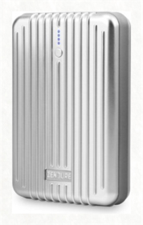 the COBURNS iPad Stands 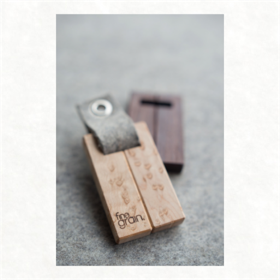 FINEGRAINFlash Disc  Lumu Lightmeter 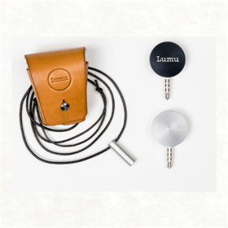 lumuGlif 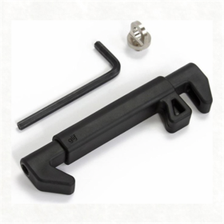 studio neat |
bookshelf
Collection Total:
1,146 Items
1,146 Items
Last Updated:
Jan 4, 2014
Jan 4, 2014
 Made with Delicious Library
Made with Delicious Library